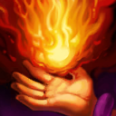

起手裝備
 增幅典籍
增幅典籍
惡意、火箭腰帶與帽子維持泰貝爾團戰路線；沙漏在後段提供進場保命。


五件成裝與鞋子分開列示；起手與核心是購買路線，不是額外佔用的成裝欄位。鞋子完成時機仍依對線壓力與回城金錢調整。


保留電刑與海克斯閃現，後者只能在非戰鬥的可用條件下蓄力，不能當成第二個即時閃現。


閃現接已準備好的範圍控制；點燃只在能跟進爆發時交出。
加點優先：Q > W > E
主Q、副W、E最後；Q命中與被動暈眩層數須分開判斷。

施放四個技能後，下一個攻擊性技能會使命中的敵人暈眩；可透過技能圖示掌握目前層數。
射出會碰撞目標的火球，造成小範圍魔法傷害；擊殺目標時回復魔力並縮短冷卻。需要瞄準與命中，並非無法躲避的指定技。
向前方錐形區域噴出烈焰，對範圍敵人造成魔法傷害，可配合被動暈眩多人。
為自己與泰貝爾提供護盾和短暫跑速；不把這個技能當成反彈普攻傷害或任意指定隊友的護盾。
召喚泰貝爾造成範圍傷害；泰貝爾可猛撲並擊飛目標，持續灼燒周圍敵人。
修正Q為可躲避火球，E為自己及泰貝爾護盾與加速；刪除指定必暈與反彈傷害舊描述。
1技暈眩 → 2技 → 普攻 → 3技撤退
嗜火準備好後以一技命中後暈眩，接二技與普攻觸發死亡電刑，再用三技加速拉開。 先確認被動暈眩已備妥；Q火球可以被走位躲過。
閃現 → 4技暈眩 → 2技 → 1技 → 點燃
從視野外閃現大絕命中核心，接二技與一技完成爆發；點燃只交給確定能擊殺的目標。 先確認被動暈眩已備妥；Q火球可以被走位躲過。
3技護盾 → 1技暈眩 → 4技 → 2技
刺客進場時先用護盾承受傷害，再以一技穩定暈眩；不必冒險把大絕丟向遠處。 先確認被動暈眩已備妥；Q火球可以被走位躲過。
用一技尾刀可穩定控制魔力，透過空放三技累積嗜火層數。準備暈眩時可藏在三層，等敵人靠近再用技能瞬間疊滿，降低對方提前後退的時間。
惡意 → 海克斯科技火箭腰帶 → 死亡之帽為預設前三件。惡意、火箭腰帶與帽子維持泰貝爾團戰路線；沙漏在後段提供進場保命。
優先威脅敵方後排或保護己方主力。暈眩不必一定交給大絕，一技穩定點控刺客往往更可靠；泰貝爾存活時持續指揮其追擊或阻擋走位。
以中路分頁的威脅為主，重點為星朵拉、伊瑞莉雅、麗珊卓；移除同時列於有利與不利的衝突，對局為機制建議而非勝率排序。
對局名單是機制與分路判斷，不代表固定勝率；需同時看雙方熟練度、兵線與陣容。
惡意、火箭腰帶與帽子維持泰貝爾團戰路線；沙漏在後段提供進場保命。
斜向離開暗黑法球與推球直線，E交出後才接近；不要追過既有球的位置。
觀察殘血小兵和被動層數，退離可連續Q接近的路徑，保留反突進控制。
保留對付W／R控制的距離，不追著E冰爪走進埋伏；她交出自保後再補傷害。
依本頁目前五件成裝與鞋線替換；同一格多個建議擇一。先看實際傷害和控制，再決定是否犧牲輸出或保命。
高
觸發：敵方魔防成形時優先百分比穿透；已帶虛空就保留，不因坦克多重複買第二件。
目前配置已包含對應工具；先確認是否能有效使用，不需重複購買。
鞋子更換時需連同三級升級路線一起更換；五件成裝不含鞋，主動裝仍占成裝格。
高
觸發：敵方一輪爆發使你無法完成輸出時，改中婭並保留使用時機；若已配中婭就先調整站位與啟動時間。
無限寶珠 → 中婭沙漏
敵方一輪爆發使你無法完成輸出時，改中婭並保留使用時機；若已配中婭就先調整站位與啟動時間。
敵方一輪爆發使你無法完成輸出時，改中婭並保留使用時機；若已配中婭就先調整站位與啟動時間。
鞋子更換時需連同三級升級路線一起更換；五件成裝不含鞋，主動裝仍占成裝格。
高
觸發：敵方單次關鍵技能先手決定生死時改女妖；護盾被遠程消耗後先退，女妖不是主動解控。
無限寶珠 → 女妖面紗
敵方單次關鍵技能先手決定生死時改女妖；護盾被遠程消耗後先退，女妖不是主動解控。
敵方單次關鍵技能先手決定生死時改女妖；護盾被遠程消耗後先退，女妖不是主動解控。
鞋子更換時需連同三級升級路線一起更換；五件成裝不含鞋，主動裝仍占成裝格。
高
觸發：回復妨礙擊殺且隊友無法穩定重創時，先遺忘寶珠過渡再改黑魔禁書；不要為小額治療過早打散核心。
無限寶珠 → 黑魔禁書
回復妨礙擊殺且隊友無法穩定重創時，先遺忘寶珠過渡再改黑魔禁書；不要為小額治療過早打散核心。
回復妨礙擊殺且隊友無法穩定重創時，先遺忘寶珠過渡再改黑魔禁書；不要為小額治療過早打散核心。
鞋子更換時需連同三級升級路線一起更換；五件成裝不含鞋，主動裝仍占成裝格。
高
觸發：護盾持續擋住主要傷害時改海洋之戟；這是破盾功能，不能替代重創。
無限寶珠 → 水仙三叉戟
護盾持續擋住主要傷害時改海洋之戟；這是破盾功能，不能替代重創。
護盾持續擋住主要傷害時改海洋之戟；這是破盾功能，不能替代重創。
鞋子更換時需連同三級升級路線一起更換；五件成裝不含鞋，主動裝仍占成裝格。
高
觸發：魔法傷害與可被韌性縮短的控制占主導時，整條鞋線改水星之靴→鎖鏈軍靴；韌性不縮短擊飛。
魔力之靴 → 水星之靴
魔法傷害與可被韌性縮短的控制占主導時，整條鞋線改水星之靴→鎖鏈軍靴；韌性不縮短擊飛。
魔法傷害與可被韌性縮短的控制占主導時，整條鞋線改水星之靴→鎖鏈軍靴；韌性不縮短擊飛。
鞋子更換時需連同三級升級路線一起更換；五件成裝不含鞋，主動裝仍占成裝格。
本頁校正版本：7.3b；校正日期：2026-10-15。
參考來源標示版本：7.3b
Tier、出裝、符文與對局是本站編輯建議，不是官方推薦或已驗證台服勝率。v118延續同日v117的逐路複核，針對來源缺口及數值衝突再核對；未宣稱所有技能已在手機內逐級實測。
評級理由：安妮中路保留S；同分路7.3b編輯參考。修正Q為可躲避火球，E為自己及泰貝爾護盾與加速。
Riot 官方資料 ↗ · WildRiftFire 參考攻略 ↗
本頁延續2026/10/15 v117的中路逐項複核，當前採用7.3b來源；來源只用作配置與機制參考，不等同官方推薦或台服即時勝率。
安妮中路保留S；同分路7.3b編輯參考。修正Q為可躲避火球，E為自己及泰貝爾護盾與加速。